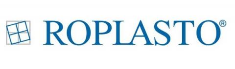
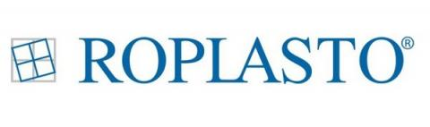

ALU stolarija
ALU prozori i vrata odišu kvalitetom i sa pravom odišu sve većom popularnošću. ALU stolarija kao svoje glavne karakteristike izdvaja otpornost na vremenske prilike kao i veću izdržjivost u poređenju sa plastičnim prozorima. Takođe ono što izdvaja ALU stolariju od ostalih je dizajn koji uspešno odoleva novijim dizajnima stolarije. ALU prozori i vrata su veoma stabilni i čvrsti i sama činjenica da posedujete ALU stolariju značajno umanjuje rizik od provale.
Simić ALU stolarija se pravi od laganih ALU profila koji omogućavaju veoma laku montažu, a dug životni vek ove stolarije će zadovoljiti i najzahtevnije korisnike. Zahvaljujući novijoj i sofisticiranijoj građevinskoj tehnologiji, ALU stolarija je evoluirala u odličnu formu toplotne izolacije i energetske efikasnosti.
Aluminijumski prozori dostupni su u mnogo različitih boja i raznih dizajn opcija, a takođe se mogu dizajnirati u boji prema željama kupca. Jednostavna nega i održavanje samo su dve od mnogih prednosti.
Aluminijumski prozori dostupni su u mnogo različitih boja i raznih dizajn opcija, a takođe se mogu dizajnirati u boji prema željama kupca. Jednostavna nega i održavanje samo su dve od mnogih prednosti.
ALU stolarija
Tanki profili i visokokvalitetni izgled, aluminijumski prozori ispunjavaju i najviše zahteve modernog dizajna. Zahvaljujući izuzetno maloj težini i istovremeno velikoj dimenzionalnoj stabilnosti, mogu se izraditi površine prozora veće od proseka.
Izbor oblika prozora je gotovo neograničen što se tiče aluminijuma. Od obično pravougaonih preko lučnih do trapezoidnih prozora mogu se ostvariti razne želje. Pored izbora oblika, jedva da postoje ograničenja u šemi boja.
Obe strane mogu biti dizajnirane isto ili različito. Elegantni prozori izrađeni od aluminijuma, tankih širina lica i svojim individualnim izgledom savršeno se uklapaju u bilo koji arhitektonski stil. Zahvaljujući nebrojenim mogućnostima dizajna za čitav prozor, lako se može prilagoditi vašim ulaznim vratima, balkonskim vratima itd. Za razliku od plastičnih prozora, boje aluminijumskih prozora ne žuti ni u ekstremnim vremenskim uslovima. Razlog tome je poseban postupak premazivanja u kojem se boja stapa sa aluminijumom i formira stabilan zaštitni sloj.
ALU stolarija
Dugoročno rešenje za Vaša vrata
ALU vrata predstavljaju funkcionalno i dugoročno rešenje koje pritom obezbeđuje visok nivo energetske efikasnosti. Aluminijumska vrata udružuju čvrstoću metala sa modernim dizajnom i otpornošću na spoljašnje atmosferske uticaje.
Zahvaljujući svom elegantnom izgledu kao i fleksibilnosti dizajna, veoma niskim zahtevima kada je održavanje u pitanju, danas su aluminijumska vrata postala izbor mnogih kako na poslovnim tako i na stambenim objektima.
ALU stolarija
Prozori koji predstavljaju čistoću i dugotrajnost
ALU prozori su postali veoma popularni poslednjih decenija i svoju primenu su našli kako u poslovnoj tako i u rezidencijalnoj arhitekturi. Tokom dugog niza godina aluminijum je smatran materijalom koji ima loše termoizolacione osobine, međutim, tehnologije i tehnike izrade ramova za prozore i vrata su značajno napredovale što je čitavu industriju aluminijumske stolarije postavilo na mesto koje zaslužuje.
Aluminijumski prozori predstavljaju ekonomski isplativo, funkcionalno i dugoročno rešenje.Visok stepen mehaničke čvrstoće i otpornost na vremenske uticaje, troškove održavanja svešće na minimu
ALU stolarija
Kontrola svetlosti u prostorijama sa lakoćom sa Simić spoljašnjim roletnama
Spoljne roletne su one roletne koje su mahom namejnjene za naknadnu ugradnju na već postavljene prozore. Kućište roletne se nalazi na spoljnoj strani i oblog je oblika na krajevima. Roletne mogu imati ručno ili motorno upravljanje putem tastera ili daljinskog upravljača
Funkcija Armor roletni jeste da stane na put svetlosti, poboljša termoizolaciju kao i zvučnu izolaciju. Roletne se standardno izrađuju u beloj boji ali to ne treba da vas obeshrabri jer Armor roletne mogu doći u više dezena ili u boji po želji. Ove roletne se mogu koristiti i za zaštitu terasa od kiša, sunca i ostalih vremenskih uticaja. Roletne se mahom koriste i za zaštitu prozora od spoljašnjih uticaja.